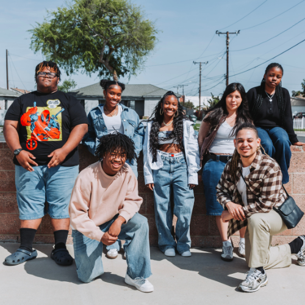
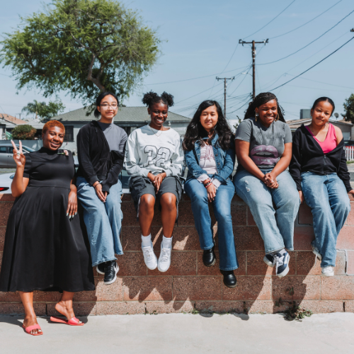

Who We AreWe are a passionate collective of writers, designers, and coders, based in Compton and South Central Los Angeles, united by a shared vision. Our mission is simple yet powerful: to create an engaging and empowering digital space where young people can feel confident in who they are, embrace their identity, and stay informed about the world around them. This platform is designed not only to uplift voices that are often unheard but also to spark curiosity and conversation. Whether you're here to discover fresh perspectives, stay in the loop about what's happening in your community, or just find a space that feels real—we got you. Join us as we review, reflect, and analyze current events in the west coast that you may or m ay not have heard of. |
Graphic DesignOur Artist / Graphic Designers With The Assistance Of Hunnibuzz Will Create The Color Scheme, Photography, And Gneral Aesthetic Our Web Zine. Thin Is For All The Artsy Folks Who Love Create Mood Boards. |

CodingOur Coders Will Be Working With The Hidden Gennius Project To Code The Digital magazine. This Means Typing And Creating All Of The Info And Date To Create The Actual Site. Think Of These Folks As The Architects Of Our Magazine. |

JournalismOur Journalist Group Led By Our Watts Bookshop Cyber G.IRLS In This Group Write All Of The Articles, Peoms, And Think Pieces For Our Digital Magazine. This Is Perfect For Folks Who Love To Write, Journal, And Share Their Thoughts. |

Article #1 |
Article #2 |
|
Article #3 |
Article #4 |